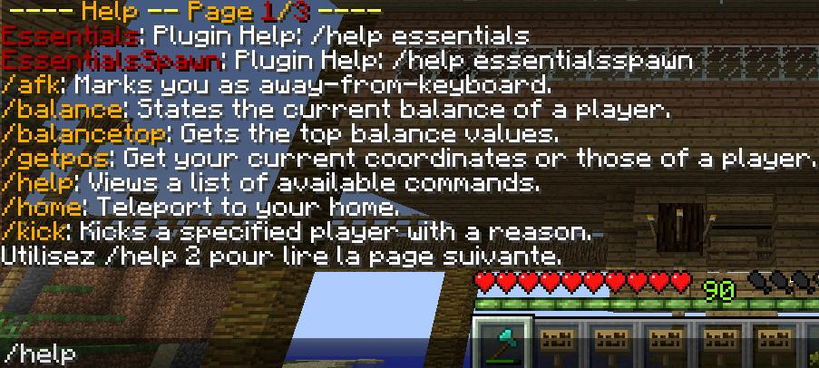
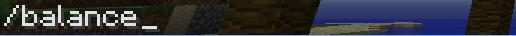
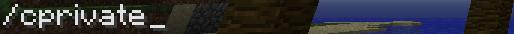

Plugins
Introduction
Bienvenue à vous qui voulez en apprendre plus sur tous les plugins installer sur le serveur (bandes de curieux va !). Tout d’abord sachez que cette page va entièrement ce consacrer à vous expliquez et vous montrer l’utilisation des plugins correctement, nous verrons des commandes déjà rencontrer dans d’autre chapitre, mais toute les commandes seront ici à votre disposition.
Connexion
Lorsque que vous arrivez pour la première fois sur le serveur vous devez vous créer un compte avec :
"/register "votremotdepasse" "confirmervotremotdepasse" est la première commande à taper en arrivant et la seconde est :
"/Login motdepasse" et c’est cette commande que vous devrez répéter a chaque connexion sur le serveur ou à chaque Reload (lorsque l’administrateur rajoute un plugin et créer un Reload pendant que le serveur est ouvert). Naturellement lors du premier /register vous avez pas besoin de vous login.
De plus si par malheur vous oublier le / pendant que vous vous loger vous pouvez a tout moment changer de mot de passe avec la commande ci-dessus "/changepassword motdepasseactuel nouveaumotdepasse".
Home
Pour 20$ avec la commande "/set home"

Vous pouvez vous créer un endroit où vous pouvez réapparaitre en tapant "/home" qui coûte 5$.

Dans le même genre taper "/home bed" pour réapparaitre a votre lit.
Où vous devez avoir impérativement avoir dormi dedans au moins une fois pour vous y téléporter pour 5$ aussi
Commande Quotidienne
Les commandes que vous utiliserez quotidiennement dans le jeu sont référencer ici
Kit tools
"/Kit tools" permet de vous donner pour 5$ un jeu complet d’item en bois (pelle, pioche, etc).
Help
Permet de voir toute les commandes possibles dans le jeu, testez et vous verrez vous n’aurez peut-être plus besoin de moi grâce au "/help nondelacommande" exemple :

Elle vous donne la définition de ce que fait la commande demandé individuellement.
Money

"/balance" permet de consulter la somme actuel de votre compte et :
"/balance" top permet de consulter la liste de tous les joueurs et leur classement par rapport à ce qu’il possède sur leur compte de manière décroissant.
Le "/pay" permet de donner de l’argent a un joueur à partir de votre compte ("/pay Draxxo 50" donnera 50$ au joueur Draxxo et vous perdrez donc 50$)
Message
Pour écrire dans le chat le bouton par défaut et la lettre "t"
Pour envoyer un message privée a quelqu’un faire "/t lenondejoueur votremessage".
Magnétisme
"/cmagnet on", s’utilise sur un coffre et permet d’attirer les objets directement dans le coffre dans un rayon de 3 blocks. Pour enlever le magnétisme "/cmagnet off" sur le coffre tout simplement.
Player Versus Player
Le PvP est autoriser seulement la nuit pendant toute cette période vous pouvez attaquer ou être attaquer sans prévenir, donc soyer sur vos garde car si vous mourez durant un affrontement non voulu vos item perdu et votre argent perdu ne sera aucunement rembourser.
Eh oui ! Car vous perdez vos item lorsque vous vous faite tuer contre cela ayez toujours un COFFRE sur vous car un des plugins permet de mettre tous vos item dans le coffre que vous transportez si vous mourrez (attention le coffre ne reste en place que pendant 3600s soit 1h) et pour l’argent malheureusement vous ne pouvez que le récupérer en tuant la personne qui vous a tuer.
Voilà comme vous pouvez le voir pas grand-chose a votre disposition rien de très intéressant mais vous pouvez toujours vérifier votre classement ou bien vote KDR (Kill Death Ratio).
Le système de combat est simple plus vous gagner de combat plus votre rang augmente. Si un joueur rang 1 tue un joueur rang 5 il gagnera beaucoup plus d’expériences lui permettant de monter son rang plus haut lvl rapidement. Inversement un rang 5 ne gagnera pratiquement pas d’expérience en tuant un rang 1.
Priver ou pas : le LWC

"/cprivate" permet de mettre en mode privé soit une pancarte, un coffre, une porte, etc, qui ne pourra être utilisé ou modifier que par vous.
Le "/cremove" permet d’enlever toute les protections mise sur un objet
Le /cpublic permet de rendre public un objet et le rendre utilisable par tous.
Remarque : exemple pour rendre un coffre public vous devez faire un /cremove dessus puis faire un /cpublic pour que personne ne puisse priver votre coffre (un coffre avec /cremove sans aucune autre protection dessus peut-être mis en /cprivate par n’importe quel joueur pensez-y.
Comme vous pouvez le voir plusieurs autres protection sont possible avec des mots passes, etc… leur utilisation reste identique à ce qui a était expliquer plus haut. C’est /lwc que vous devez taper pour voir toute les protections possible en jeu.
Shop
Je pense que vous allez vouloir trouver un moyen de vous faire de l’argent sur ce serveur comme ceci par exemple :
Comme vous pouvez le voir il y a un ordre très précis pour mettre un ou plusieurs item en vente je vais vous expliquer ci-dessous plus en détail :
Première ligne : votre pseudo (indique que c’est à vous que sera remis l’argent gagner ne vous tromper pas de pseudo).Deuxième ligne : combien d’item vous voulez vendre en même temps (1 indique que vous allez vendre 1 par 1, etc).
Troisième ligne : B suivi de votre prix de vente (B signifiant Buy = acheter) et S suivi de votre prix de rachat (S signifiant Sell = vendre) S n’est pas obliger d’être préciser vous pouvez aussi écrire tout simplement votre prix de vente sans préciser le B.
Quatrième ligne : l’item que vous voulez vendre avec soit le nom de l’item en anglais ou son ID (mais le plus lisible étant de mettre le nom en anglais pour les futurs acheteurs.
Portail
Les portails, tout simplement mon plugin préféré j’utilise tous les jours des portails et c’est évidement très pratique malgré que cela coute cher en construction regarder par vous-même :
Evidement les blocks en or sur les coins supérieur et inferieur sont inutile c’est juste pour plus de propreté que je l’ai ai rajouté.
Il faut deux portails pour aller d’un point à un autre mais vous pouvez faire une connexion entre plusieurs portes sans aucun problème. Pour créer une connexion entre les portails vous devez placer des panneaux :
Sur la première ligne le nom de l’endroit où vous êtes (mine, spawn ou arenePvp, c’est vous qui choisissez) et sur la troisième ligne votre pseudo (notez que ce n’est pas obligatoire juste en écrivant la première ligne votre pseudo c’écrit tout seul.
Les bouteilles d’XP
Vous avez la possibilité de mettre votre expérience gagner lors des combat dans une bouteille d’alchimie en tapant "/bottle" vous avez accès a l’XP que vous possédez actuellement :
La commande pour mettre de l’XP en bouteille est :
Par exemple comme la photo ci-dessus je pourrais faire "/bottle 1" par exemple pour remplir une bouteille d’XP (notez qu’il vous faut une bouteille sur vous pour la remplir).
Résidences
Pour faire simple utiliser cette commande :

"/res ?" Vous permet d’avoir accès a toute les commandes du jeu à vous de rechercher celle dont vous avez besoin.
Je sais que ceci est très maigre comme explication c’est pour cela que je vous conseille vivement de lire le tutoriel sur les résidences.
Les échanges
Ce plugin vous permet de pratiquer un échange avec un autre joueur soit des objets contre d’autres objets soit de l’argent contre des objets.
Pour cet exemple j’ai choisi notre bien aimé administrateur Tetdoss. Comme vous le voyer il a demandé de faire un échange avec moi je vais vous expliquer comment cela se passe. Si on vous demande vous devez clic droit sur la personne, si vous vous voulez demander à quelqu’un clic droit sur lui. Facile non ?
Alors ici j’ai plusieurs étapes à vous expliquer :
Dans le cadre jaune se sont tout simplement votre argent en simplifier avec des items déjà existant en jeu (prendre de l’or pour représenter l’argent je trouve sa logique). C’est tout simple, les blocks en or on le chiffre 50 assigner a eux c’est pour dire qu’il vaut 50$, les lingots 10$ et le nugget 1$, naturellement vous récupérer de l’argent et non les nuggets ou lingots ou blocks, cela serait abuser tout de même.
Dans le cadre orange c’est l’item que je souhaite vendre à Tetdoss.
Dans le cadre marron Tetdoss me propose (si vous avez compris) 1$ avec le nugget proposé.
Pour finir dans le cadre rouge vous pouvez voir une laine rouge et une laine verte. La laine rouge c’est pour quitter les échanges, et la laine verte c’est pour accepter l’échange.
Voilà je pense vous avoir expliqué correctement l’utilisation de se plugin.
Pokémon
Cela rappelle-t-il des souvenir a certain ? Bien sûr que oui tout le monde a déjà joué à Pokémon et vous aller pouvoir trouver une version assez intéressante pour vous accompagner tout au long de votre séjour sur notre serveur.
Le principe de ce Plugin est très simple il suffit tous simplement de lancer un œuf sur un mob que ça soit un Creeper ou une vache….et vous récupérer un œuf pour le faire Spawn a votre tour
Attention : même si l’œuf vous appartient un Creeper essayera toujours de vous tuer, une utilisation concrète de ce système sera faite avec la compétence apprentissage.
Il y a naturellement une probabilité plus ou moins grande de droper un œuf de mob en voici le tableau :
Pokémon probabilité
| Mobs |
Probabilité |
| Pig Zombie |
15% |
| Magna Cube |
10% |
| Cave Spider |
25% |
| Creeper |
20% |
| Sklelton |
25% |
| Spider |
25% |
| Zombie |
25% |
| Slime |
15% |
| Ghast |
5% |
| Enderman |
10% |
| Silverfish |
25% |
| Blaze |
10% |
| Pig |
50% |
Pokémon probabilité
| Mobs |
Probabilité |
| Sheep |
50% |
| Cow |
50% |
| Chicken |
50% |
| Squid |
25% |
| Wolf |
50% |
| Angrywolf |
25% |
| Mooshroom |
1% |
| Villager |
0% |
| Ocelot |
25% |
| Irongolen |
0% |
| Snowman |
50% |
| Big Zombie |
0% |
| Enderdragon |
1% |
Attention lisez ceci : pour les Endermans cela est très diffèrent il faut les tuer avec un œuf a la main et non leur lancer ceci et peut être bizarre mais c’est impossible tout simplement car l’Enderman esquive l’œuf que vous lui lancer.
Recruteur
Cette partie ne s’adresse qu’aux recruteurs car plusieurs d’entre eux ne connaissent pas les commandes qui sont à leur disposition. Voici toutes les commandes disponibles pour les recruteurs :
"/pex promote pseudo" permet de mettre membre une personne venant d’arriver sur le serveur et voulant participer à l’agrandissement du serveur.
Naturellement tout homme ayant le pouvoir de donner le droit d’être parmi peux aussi faire respecter les lois (faite attention de l’utiliser avec justice non comme un jeu) :
"/jail pseudo prison" met le joueur choisir en prison tout au contraire :
"/unjail pseudo" sort de prison le joueur et le remet à sa dernière position connu.
Vous pouvez aussi vous téléporter à un joueur ayant besoin de votre aide :
"/tpa pseudo" se téléporte a la personne mais la personne doit confirmer en tapant elle-même "/tpaccept" et au contraire :
"/tpahere pseudo" téléporte la personne à vous et elle doit aussi faire /tpaccept.
Si un joueur est vulgaire sur le chat ne soyez pas trop dur directement, faite juste :
"/mute pseudo" est un bon moyen de la calmer, mais si elle persiste :
"/kick pseudo" peu peut être la remettre en place sinon demander à l’administrateur de ban définitivement cette personne.